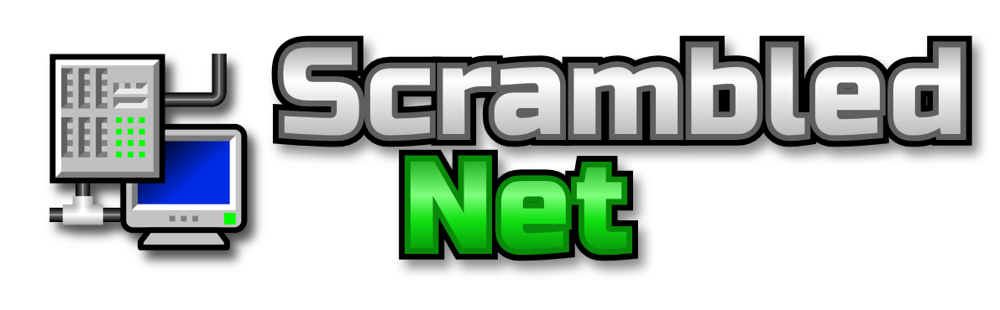

Scrambled Net is a simple puzzle game which requires you to sort out the connections in a computer network, so that all the terminals are connected to the server. The network is made up of tiles, and while all the tiles are in the right place, they have been rotated randomly into a useless mess.
You need to rotate individual tiles to re-connect the network. Tiles which are connected to the server are shown highlighted. When all terminals are connected, you've won.
Tap any tile to rotate it once clockwise. Keep tapping until the tile is in the right orientation.
Long-press (or right-click) a tile to lock it in place so you can't rotate it by accident. Do it again to unlock. With a keyboard, use the arrow keys, Space to rotate and L to lock.
The original Scrambled Net was inspired by KNetWalk, and was built by Ian Cameron Smith.
This version was created using updated assets from "Scrambled Net Modern", by jimnastic89 https://github.com/jimnastic89/ModernScrambledNet
This version updated and converted to a webapp by Jonathan Searra
Scrambled Net collects no personal data. Read the privacy policy.
Time: 0:00
Moves: 0
Time:
Moves: